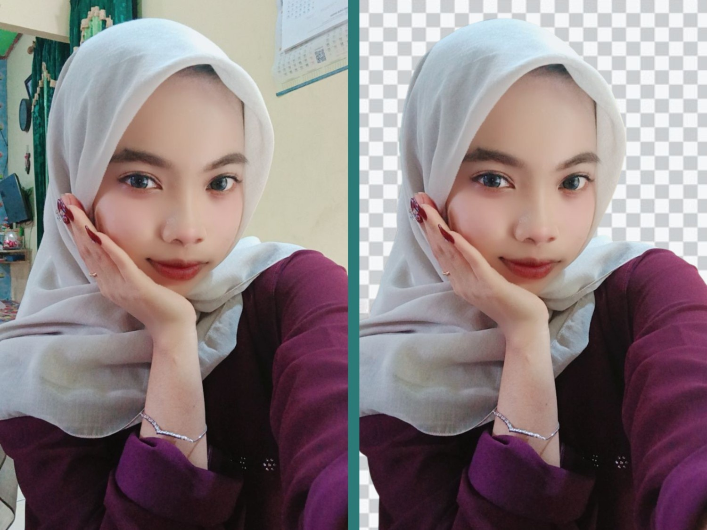

Kalau Anda jualan online, background foto yang bersih itu bukan sekadar estetika, tapi soal kepercayaan pembeli. Kami sering lihat produk yang sama bisa terlihat jauh lebih premium hanya karena latarnya rapi.
Dulu proses cutout butuh waktu lama di software desktop. Sekarang, AI bisa memisahkan objek dan latar dalam hitungan detik, bahkan untuk rambut atau detail tipis.
Kenapa Ini Penting?
- Desain lebih cepat: cocok untuk katalog, marketplace, dan konten sosial media.
- Lebih konsisten: hasil potongan rapi tanpa pinggiran kasar.
- Fokus ke produk: perhatian pelanggan tidak terpecah oleh latar belakang.
Alur Kerja yang Direkomendasikan
- Gunakan foto dengan cahaya cukup dan objek tidak terlalu gelap.
- Hapus background otomatis, lalu cek tepi objek di area rambut/tangan.
- Tambahkan latar polos (putih/abu muda) untuk foto katalog.
- Simpan versi PNG transparan untuk kebutuhan desain berikutnya.